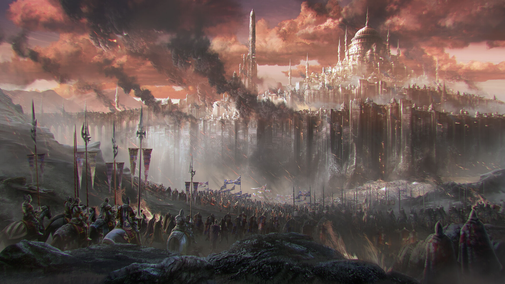
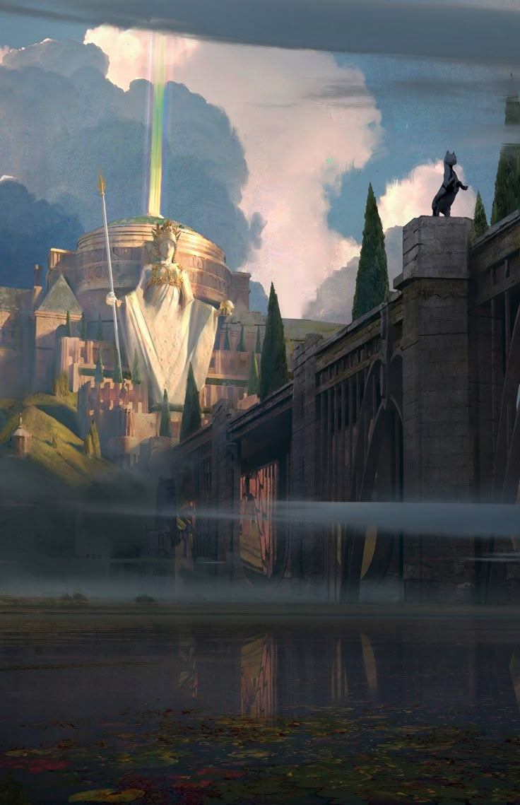
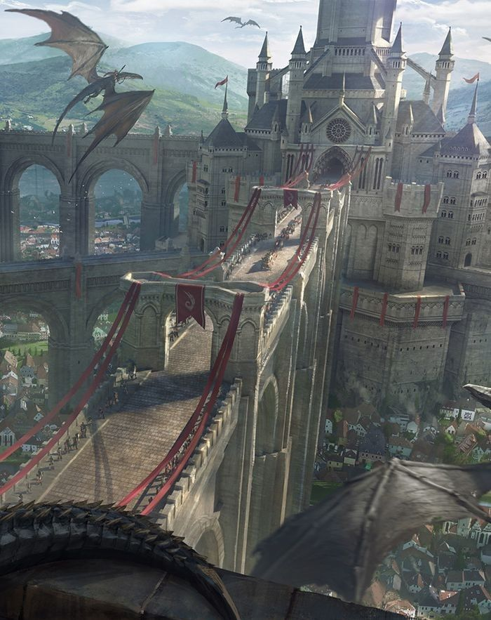

Возвышаясь над внутренним городом, Идрийский замок представляет собой крайне внушительное сооружение круглой формы, возведённое на искусственно укреплённой возвышенности, что делает его видимым из любой точки столицы. Это — город в миниатюре, государство в камне, символ незыблемой власти, арена дворцовых интриг и узел политических решений.

Окружённый глубоким, каменнообложенным рвом с водами из светлой Центы, замок защищён не одной, а тремя концентрическими стенами, каждая из которых толста, высока и оснащена баллистами, магическими печатями и бойницами. Стены венчают смотровые башни, из которых дневные и ночные дозоры обозревают округу, а высшие арканисты следят за эфирными и астральными нарушениями. Главный подъемный мост соединяет замок через внешние врата с площадью Сердца, ведущей к Храму Святой Жертвы и другим знаковым местам. Он украшен барельефами великих побед, и при приближении его охраняют две массивные статуи львов, из пастей которых ночью вырывается эфирный свет, освещающий путь гостям и охраняющий проход от незваных гостей. Центральные ворота замка — целый оборонительный узел: дубовые ставки, окованные металлом, герметичные заслоны, магические печати, решётка из зачарованной стали, способная опуститься за секунды. На башнях у ворот размещены баллисты и маслобросательные механизмы, а ниже — отсек для конных дозоров и башня сигнального огня.

Внутри внешнего кольца стен раскинулся широкий внутренний двор, окружённый казармами, призамковыми мастерскими, гостевыми домами, садовыми террасами и фруктовыми аллеями. Здесь можно найти такие места как, например, конюшни королевского двора, где содержатся боевые скакуны, грифоны и ездовые виверны; корчмы и трапезные для слуг, солдат и гостей, предлагающие пищу круглосуточно; бани и паровые домики, куда имеют доступ лишь аристократы. Сам двор украшен декоративными статуями, фонтанами в виде львов и мозаичными дорожками, ведущими ко входу в центральный донжон — величественное здание в самом центре внутреннего кольца, восемь этажей ввысь и столько же — вниз. На территории замка находится отдельный комплекс зданий, выделенный под Коллегию Архимагов — верховный совет магии всей Идры, храм познания, оплот контроля над силой эфира. Здесь время от времени появляются самые сильные и опасные маги человечества, принимаются решения, способные изменить течение судеб целых народов. У каждого архимага — своя башня и свой секрет. На главной башне Коллегии развевается алый штандарт с глазом, символизирующий знание, что видит сквозь всё. По периметру замкового комплекса расположены малые поместья, принадлежащие герцогам, графам и верховным воеводам королевства. Они как миниатюрные замки внутри главного, с внутренними двориками, залами, садами и личными часовнями. Живущие там аристократы фактически ведут политическую жизнь на границе трона и совета, влияя на решения монарха и внешнюю политику Идры. Здесь также есть своя замковая церковь, в которой проводятся коронации, венчания, моления перед сражениями и похороны высшей знати. Это здание отделано серебром, стеклом и редкими видами камня, а внутри хранятся личные реликварии короля.

Здесь располагаются парадные залы, увешанные гобеленами, фресками и портретами королей. Именно в этом здании на находится тронный зал, где проходят совещания и аудиенции. Здесь возвышается трон, вырезанный из цельного куска редчайшей породы дерева, перед которым — мозаичный герб Идры. Частные покои монарха, его семьи и ближайших советников также имеют место быть в центральном донжоне. Отдельной постройкой, соединённой с донжоном через переход является Королевская Библиотека, хранящая бесчисленное множество документов, магических контрактов, родословных книг и законов. Секретные комнаты донжона — алхимические лаборатории, переговорные и портальные залы, скрытые от глаз непосвящённых, находятся под землёй. На верхнем уровне расположены обсерватории, где звездочёты следят за небом, а магистры времени — за эфемерными циклами.
Ни один настоящий замок не обходится без подземелий — и Идрийский замок скрывает в себе обширную сеть катакомб, тайных тоннелей и темниц для особо важных заключённых.